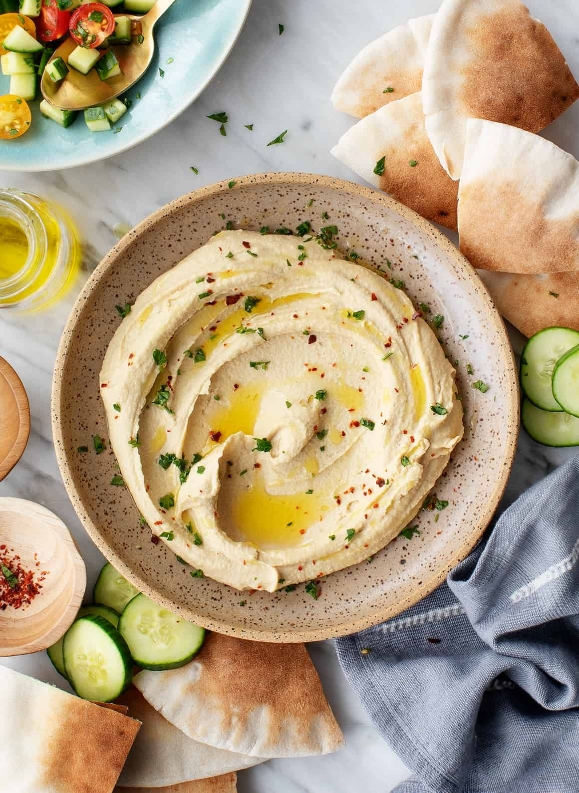

Hummus

Description
Hummus is a delicious and creamy dip made from mashed chickpeas, tahini (sesame paste), lemon juice,
garlic, and olive oil. It's a staple in Middle Eastern cuisine and is often served as an appetizer or
snack with pita bread, crackers, or vegetables. Hummus is not only tasty but also packed with protein,
fiber, and healthy fats, making it a nutritious addition to any meal.
Ingredients
- 1 can (15 ounces) chickpeas, drained and rinsed
- 1/4 cup tahini
- 3 tablespoons lemon juice
- 2 cloves garlic, minced
- 2 tablespoons olive oil
- 1/2 teaspoon ground cumin
- Salt to taste
- 2-3 tablespoons water (optional, for desired consistency)
- Paprika and olive oil, for garnish
Steps
- In a food processor, combine the chickpeas, tahini, lemon juice, garlic, olive oil, cumin, and salt.
- Blend until smooth and creamy, adding water as needed to achieve the desired consistency.
- Taste and adjust seasoning, adding more lemon juice or salt if necessary.
- Transfer the hummus to a serving bowl, drizzle with olive oil, and sprinkle with paprika for garnish.
- Serve with pita bread, crackers, or vegetables for dipping.